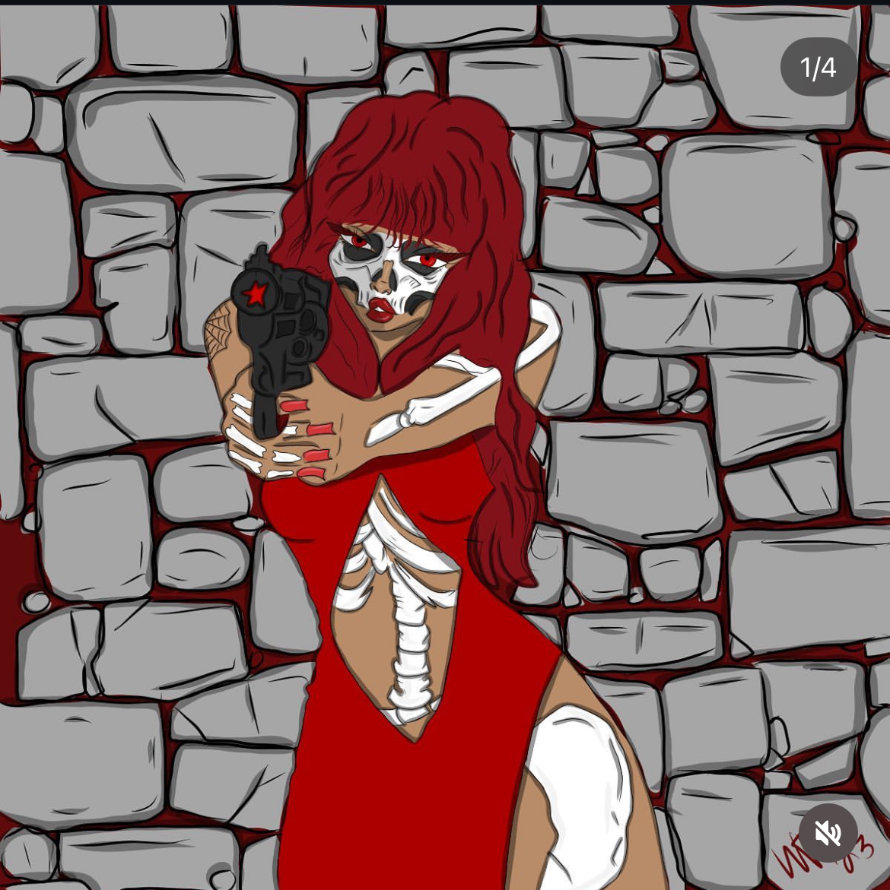

Waleska Tirado Pacheco
📍 Deltona, FL | 📧 wt.illustrates@gmail.com | 📞 (689) 313-1365
Creative Graphic Designer & Digital Artist
Bringing visions to life through bold, innovative, and engaging visual storytelling.
Showcased Illustration Digital Art


